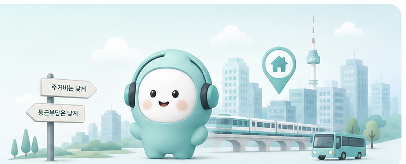

LOCA는 월세뿐 아니라 교통비와 출퇴근에 쓰이는 시간까지 함께 계산해 내 직장에 맞는 실제 주거 부담을 비교합니다.

30,171개의 거주동-근무동 조합을 분석한 결과
월세는 저렴하지만 통근까지 포함하면 오히려 부담이 커지는 조합
LOCA는 서울 행정동을 주거비·통근시간·교통구조를 바탕으로 6가지 유형으로 분석했습니다.
그럼 나는 지금 얼마나 부담하고 있을까요?
현재 집과 실제 직장을 입력하면 내가 매달 부담하는 주거비와 통근 부담을 함께 계산해드려요.